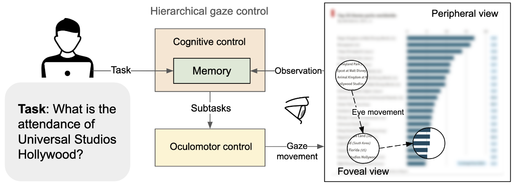

CHI 2025, Yokohama 🌸
To design data visualizations that are easy to comprehend, we need to understand how people with different interests read them. Computational models of predicting scanpaths on charts could complement empirical studies by offering estimates of user performance inexpensively; however, previous models have been limited to gaze patterns and overlooked the effects of tasks. Here, we contribute Chartist, a computational model that simulates how users move their eyes to extract information from the chart in order to perform analysis tasks, including value retrieval, filtering, and finding extremes. The novel contribution lies in a two-level hierarchical control architecture. At the high level, the model uses LLMs to comprehend the information gained so far and applies this representation to select a goal for the lower-level controllers, which, in turn, move the eyes in accordance with a sampling policy learned via reinforcement learning. The model is capable of predicting human-like task-driven scanpaths across various tasks. It can be applied in fields such as explainable AI, visualization design evaluation, and optimization. While it displays limitations in terms of generalizability and accuracy, it takes modeling in a promising direction, toward understanding human behaviors in interacting with charts.
